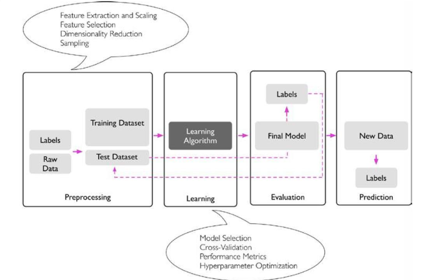

Introduction to Machine Learning Concepts
CCS 247 - Machine Learning
What is Machine Learning?
Machine Learning is a branch of artificial intelligence (AI) and computer science which focuses on the use of data and algorithms to imitate the way that humans learn, gradually improving its accuracy.
Machine Learning is the science (and art) of programming computers so they can learn from data.
Traditional programming approaches require explicit rules, while machine learning uses data to automatically adapt to change and learn patterns without being explicitly programmed.
Learning from Data
Machine learning systems learn from examples and can adapt when exposed to new data. This differs from traditional programming where explicit instructions must be coded.
Supervised Learning
Learning a model from labeled training data to make predictions about unseen or future data.
Supervised Learning refers to a set of training examples (data inputs) where the desired output signals (labels) are already known.
In supervised learning, the algorithm is provided with labeled data, receives direct feedback, and learns to predict outcomes or future results.
Classification
Classification algorithms predict categorical class labels of new instances based on past observations. Class labels are discrete, unordered labels that can be understood as the group memberships of the instances.
Types include:
- Binary classification
- Multiclass classification
Regression
Regression focuses on the prediction of continuous outcomes. Given several predictor (explanatory) variables and a continuous response variable (outcome/target), a relationship between those variables is found.
Supervised Learning Algorithms
- k-Nearest Neighbors
- Linear Regression
- Logistic Regression
- Support Vector Machines (SVMs)
- Decision Trees and Random Forests
- Neural networks
Unsupervised Learning
Exploring the structure of data to extract meaningful information without the guidance of a known outcome variable or reward function.
Unsupervised Learning deals with unlabeled data or data of unknown structure to find hidden patterns.
In unsupervised learning, there are no labels, no feedback, and the algorithm works to find hidden structures in the data.
Clustering
An exploratory data analysis technique that allows us to organize information into meaningful subgroups (clusters) without having any prior knowledge of their group memberships.
Each cluster that arises during the analysis defines a group of objects that share a certain degree of similarity but are more dissimilar to objects in other clusters.
Dimensionality Reduction
A commonly used approach in feature preprocessing to remove noise from data. These techniques compress the data onto a smaller dimensional subspace while retaining most of the relevant information.
Unsupervised Learning Algorithms
Clustering:
- K-Means
- DBSCAN
- Hierarchical Cluster Analysis (HCA)
- Anomaly detection and novelty detection
- One-class SVM
- Isolation Forest
Visualization and dimensionality reduction:
- Principal Component Analysis (PCA)
- Kernel PCA
- Locally-Linear Embedding (LLE)
- t-distributed Stochastic Neighbor Embedding (t-SNE)
Association rule learning:
- Apriori
- Eclat
Reinforcement Learning
Learning through interaction with an environment to maximize rewards over time.
Reinforcement Learning develops a system (agent) that improves its performance based on interactions with the environment.
Reinforcement learning involves a decision process, reward system, and learning a series of actions to maximize the reward. Through interaction with the environment, an agent can learn a series of actions via an exploratory trial-and-error approach or deliberative planning.
Key Takeaway
Unlike supervised learning, reinforcement learning doesn't require labeled data. Instead, it learns optimal behaviors through trial and error to achieve maximum rewards.
Batch and Online Learning
Batch Learning
In batch learning, the system is incapable of learning incrementally: it must be trained using all the available data.
Online Learning
In online learning, the system is trained incrementally by feeding it data instances sequentially, either individually or by small groups called mini batches.
Basic Terminologies
Data Terminology
- Training example: A row in a table representing the dataset and synonymous with an observation, record, instance, or sample (in most contexts, sample refers to a collection of training examples).
- Feature (X): A column in a data table or data (design) matrix. Synonymous with predictor, variable, input, attribute, or covariate.
- Target (y): Synonymous with outcome, output, response variable, dependent variable, (class) label, and ground truth.
Model Terminology
- Training: Model fitting, for parametric models like parameter estimation.
- Loss function: Often used synonymously with a cost function. Sometimes the loss function is also called an error function. In some literature, the term "loss" refers to the loss measured for a single data point, and the cost is a measurement that computes the loss (average or summed) over the entire dataset.
Building Machine Learning Systems
Preprocessing
Raw data rarely comes in the form and shape that is necessary for the optimal performance of a learning algorithm. Many machine learning algorithms also require that the selected features are on the same scale for optimal performance, which is often achieved by transforming the features in the range [0, 1] or a standard normal distribution with zero mean and unit variance.
Training and Selecting a Predictive Model
Cross-validation divides a dataset into training and validation subsets to estimate the generalization performance of the model. This helps determine which model performs well without using the final test dataset.
Evaluating Models
A test dataset is used to estimate the selected model's performance on unseen data. Various performance metrics (accuracy, loss, etc.) are used to evaluate the model's performance.
Main Challenges of Machine Learning
Data-Related Challenges
- Insufficient Quantity of Training Data
- Nonrepresentative Training Data
- Poor-Quality Data
- Irrelevant Features
- Data Mismatch
Model-Related Challenges
- Overfitting the Training Data
- Underfitting the Training Data
- Hyperparameter Tuning and Model Selection